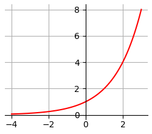
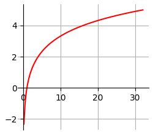
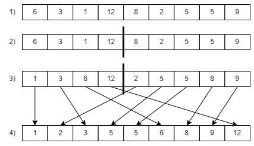

Алгоритмы и структуры данных
Алгоритмы и структуры данных
Алгоритмы и структуры данных
Рассмотренная нами модель вычислительного устройства описывает две основные функциональные сущности:
Все многообразие решаемых задач современной вычислительной техникой, в конечном счете сводится к манипуляции этими двумя сущностями. Однако оперировать такими низкоуровневыми категориями очень трудозатратно, а решение некоторых задач на таком уровне по своей сложности может превзойти способности программиста.
Для человека более удобным и эффективным является манипулирование более высокоуровневыми категориями уже известными из математики, естественных наук и жизненного опыта. Современные языковые и технические средства позволяют такую манипуляцию. А раздел компьютерной науки, изучающий эти категории, называется "Алгоритмы и структуры данных". Этот раздел изучает:
Эти знания позволяют выбирать наиболее подходящие алгоритмы и структуры данных для конкретных задач, а также создавать новые при отсутствии готовых решений.

Степенная функция имеет вид ax, где a — некоторое постоянное число. График степенной функции называется экспонентой. Для основания 2 он изображен на иллюстрации.
При этом существуют интерпретации данного выражения в зависимости от значения х:

Логарифмическая функция записывается так logax (читается: "логарифм икс по
основанию а") и показывает в какую степень надо возвести x, чтобы получить а.
Рассмотрим примеры, используя функцию модуля math log(x, [base]), где x это число, от которого
берется логарифм, а base это основание логарифма. По умолчанию base равно e, которое примерно
равно 2.718281828459045 (можно использовать константу e из модуля math).
>>> from math import *
>>> log(8, 2)
3.0
>>> log(100, 10)
2.0т.е. 23 = 8, а 102 = 100.
График логарифмической функции по основанию 2 представлен выше.
Описание проблемы: задумано случайное число в диапазоне от 1 до 100 и требуется угадать это число посредством предположения. После предположения становится известно в какую сторону надо двигаться дальше. Как это сделать за минимальное количество шагов (предположений).
Реализация данной игры описана здесь.
Поскольку число нам не известно, даны только пределы, оптимально выглядит вариант сначала
предположить число максимально близкое к середине интервала. Получив сообщение о том что искомое
число больше или меньше, мысленно отбрасываем соответствующую часть и снова предполагаем число
максимально близкое к середине оставшегося интервала. Действуем так пока не угадаем число.
Минимально количество попыток равно 1, однако более интересным является максимальное количество попыток, которое может быть сделано.
Рассмотрим предельный случай, когда мы оставшийся диапазон состоит из одного числа. Получается что на предыдущем шаге мы угадывали из 2 чисел, до этого из 4, до этого из 8 и т.д. При угадывании числа от 1 до N будет сделано k шагов. Если пронумеровать шаги в обратном порядке, то получим следующие размеры выбора:
| Номер шага | Размер выбора |
|---|---|
| 1 | 1 |
| 2 | 2 |
| 3 | 4 |
| 4 | 8 |
| ... | ... |
| k | N |
Видим что на каждом шаге i размер выбора равен 2i - 1. Следовательно 2k - 1 равен N. Следовательно k = log2N + 1.
Например, при угадывании числа от 1 до 100 количество шагов будет равно log2100 + 1.
>>> log(100, 2)
6.643856189774725Округляем в меньшую сторону, получаем 6. Прибавляем 1, получаем 7.
Вычислительные алгоритмы могут быть:
Поэтому мы не можем оценить эффективность алгоритма основываясь на физических показателях, таких как время работы, потребление электроэнергии, повышение температуры. На различных языках, трансляторах и устройствах эти показатели могут очень сильно отличаться для одного и того же алгоритма при одних и тех же входных данных. В компьютерной науке для оценки эффективности алгоритма используются относительные показатели характеризующие сам алгоритм и не учитывающие особенности его реализации и исполнения. В основе данного подхода лежит Теория сложности вычислений.
Рассмотрим простой пример алгоритма сортировки, который получает на входе массив значений и должен по окончанию работы оставить данный массив отсортированным. Основой для определения эффективности будем считать размер массива N и попробуем рассмотреть эффективность различных алгоритмов используя только известное N.
Основными действиями при сортировке являются сравнения и перестановки. Для упрощения будем рассматривать только сравнение. Существуют методики позволяющие определить для конкретного алгоритма общее количество сравнений в зависимости N. Мы эти методики рассматривать не будем, а рассмотрим возможные результаты расчета. Предположим, есть два алгоритма которые совершают количество перестановок равное соответственно:
Данные характеристики можно проиллюстрировать следующим образом. При сортировке массива из 10 элементов первый алгоритм выполнит 100 сравнений, а второй 1000. На основании имеющихся оценок можно сделать вывод, что первый алгоритм работает эффективней.
Для демонстрации рассмотрим два процессора:
Мощность второго в 300 раз выше.
Сортировка 1000 элементов первым алгоритмом будет выполнена в 10003 / 10002 = 1000 раз быстрее на одной и той же системе. Однако первый алгоритм на более слабом процессоре отработает примерно в 3 раза быстрее, чем второй алгоритм на втором процессоре. За единицу вычислительной работы мы приняли одно сравнение считая что все остальные операции сопутствующие сравнению занимают одинаковое время. Поэтому общее время работы наших алгоритмов можно представить как соответствие:
где С1 и С2 постоянный коэффициенты, которые в данном случае равны времени выполнения одного сравнения и всех сопутствующих ему операций. Данные коэффициенты зависят от особенностей реализация исполнения, поэтому в оценке производительности алгоритмов отбрасываются формируя выражения называемое асимптотикой. Для наших двух алгоритмов асимптотики записываются соответственно так:
Читается как "о большое от эн в квадрате/кубе".
Note
Данная нотация выражает "оценку сверху", т.е. асимптотику времени работы алгоритма в худшем случае. Например (квадратичный) алгоритм пузырьковой сортировки, в худшем случае работает за время О(N2). Однако, если на вход поступит уже отсортированный массив, то алгоритм отработает за время О(N).
К основным вычислительным ресурсам относятся:
Вычислительные сложности типичных алгоритмов:
Для демонстрации вариантов потребления памяти рассмотрим простую задачу: на вход алгоритму поступает N чисел, требуется принять их все и по завершению вернуть пять самых больших.
Заманчивым решением выглядит помещение всех полученных чисел в массив, сортировка массива по убыванию и возврат первых пяти элементов. Однако в этом случае потребление памяти составит с * N, где с это размер одного элемента массива. Асимптотику потребления памяти можно описать как О(N). При больших N возможно значительное потребление памяти вплоть до полного ее исчерпания. В тоже время возможно другое решение при котором в памяти находится не более шести элементов. При поступлении очередного числа оно добавляется к данным пяти элементам и среди них удаляется наименьшее. Данный алгоритм несколько сложнее реализовать однако его потребление памяти константно, т.е. не зависит от N.
Рекурсия такой прием программирования, при котором функция вызывает сама себя. Рассмотрим наиболее известный пример рекурсии в задаче Ханойские башни.
def hanoi(n, s1, s2, s3):
if n < 1:
return
elif n < 2:
yield s1, s3
else:
yield from hanoi(n-1, s1, s3, s2) # разворачивает генератор как for и возвращает значение
yield s1, s3
yield from hanoi(n-1, s2, s1, s3)
for i in hanoi(3, 1, 2, 3):
print(i) В задаче требуется переложить n дисков с одного стержня s1 на другой s3 используя оставшийся стержень s2. При решении данной задачи мы предполагаем что задача по перекладыванию n-1 дисков уже решена. Следовательно мы можем переложить n-1 дисков со стержня s1 на стержень s2, затем переложить 1 диск со стержня s1 на стержень s3 (что тривиально), а затем снова переложить n-1 дисков со стержня s2 на стержень s3.
Для перекладывания n-1 дисков мы можем вызвать ту же самую функцию hanoi, однако здесь есть
особенности. Во-первых, рекурсивный вызов должен происходить с уменьшением размера подзадачи.
В данном случае уменьшение происходит на один диск (n-1). Во-вторых, рекурсивный вызов должен
происходить до некоторого крайнего случая. В нашем примере когда n достигает значения 1,
задача становится тривиальной и решается в рамках текущего вызова.
Выполнение:
>python hanoi.py
(1, 3)
(1, 2)
(3, 2)
(1, 3)
(2, 1)
(2, 3)
(1, 3)
Сортировка слиянием (Википедия) выполняется следующим образом:
Все промежуточные сортировки выполняются с использованием того же самого алгоритма, т.е. весь алгоритм является рекурсивным. В процессе "рекурсивного спуска" размер сортируемого списка уменьшается до тех пор пока не достигнет значения 0 или 1, т.е. крайнего случая, при котором сортировка становится тривиальной.
Полный текст программы находится в файле merge_sort.py.
Рассмотрим функции по отдельности.
def merge_sort(a):
merge_sort_part(a, 0, len(a))Функция merge_sort предназначена для вызова пользователем. Она вызывает основную рабочую функцию,
передавая ей явно начальную и конечную границы входного списка.
def merge_sort_part(a, left, right):
if right - left > 1:
middle = (right + left) // 2
merge_sort_part(a, left, middle)
merge_sort_part(a, middle, right)
a[left:right] = merge(a, left, middle, right)Функция merge_sort_part (как это следует из названия) фактически выполняет все перечисленные выше
действия сортировки для фрагмента входного списка, кроме слияния, которое делегируется отдельной
функции.
def merge(a, left, middle, right):
tmp = []
i1 = left
i2 = middle
while i1 < middle and i2 < right:
if a[i2] < a[i1]:
tmp.append(a[i2])
i2 += 1
else:
tmp.append(a[i1])
i1 += 1
for i in range(i1, middle):
tmp.append(a[i])
for i in range(i2, right):
tmp.append(a[i])
return tmpФункция merge сливает два смежных отсортированных фрагмента списка. К сожалению выполнить такое
слияние на месте не получается без ухудшения асимптотики, поэтому расходуется дополнительная память
для формирования промежуточного результата.
Тестирование показанных функций выполнено в файле
merge_sort_test.py.
Note
Другие реализации слияния списков можно посмотреть здесь.
Случайные числа используются для шифрования, в играх и имитационном моделировании. Получение
случайных чисел в вычислительных устройствах является проблемой ввиду того, что все процессы внутри
этих устройств предопределены и упорядочены. Там где это необходимо используют специальные аппаратные
генераторы, которые позволяют получить значение с высокой степенью случайности. В устройствах
общего назначения используют так называемые псевдослучайные числа, которые подходят для большинства
задач. Исследуем одну из функций языка Python randint из пакета random, которое показывает
случайное целое число в заданных пределах включительно.
from random import *
import sys
def investigate_random(max_num, count):
results = [0] * max_num
for _ in range(count):
results[randint(0, max_num - 1)] += 1
return results
def visualize_list(lst, right):
v_max = max(lst)
factor = 1
divider = 1
if v_max > right:
factor = right
divider = v_max
for v in lst:
print('*' * (v * factor // divider))
max_num = int(sys.argv[1]) # количество граней "кубика"
count = int(sys.argv[2]) # количество бросков
right = int(sys.argv[3]) # ширина диаграммы
lst = investigate_random(max_num, count)
visualize_list(lst, right)
Используем массив sys.argv для получения переданных программе аргументов командной строки.
>python program.py 6 600 70
******************************************************************
****************************************************
************************************************************
**********************************************************************
**********************************************************
***************************************************************>python program.py 6 100000 70
********************************************************************
*********************************************************************
********************************************************************
**********************************************************************
*******************************************************************
*********************************************************************